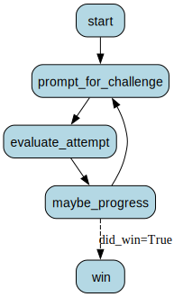

Choose your own adventure¶
A simple text-based game in the style of 80s adventure games in which you play a hungry corgi.
Setup¶
import json
from typing import Optional, Tuple
from burr.core import action, Application, ApplicationBuilder, State, default, when
from openai import OpenAI
# set your OpenAI API key to run the rest of the notebook
import os
os.environ["OPENAI_API_KEY"] = ...
RESTRICTIONS = """You're a small corgi with short legs. You can't jump high,
you can't run fast, you can't perform feats of athleticism in general
to achieve any of your goals. You can't open doors, you can't use tools,
you can't communicate with humans, you can't use your paws to manipulate
objects, you can't use your mouth to communicate with humans"""
Define actions¶
@action(reads=["challenges"], writes=["current_challenge"])
def start(state: State) -> State:
"""Load the first challenge as the current challenge"""
current_challenge = state["challenges"][0]
return state.update(current_challenge=current_challenge)
@action(reads=["current_challenge"], writes=["attempts"])
def prompt_for_challenge(state: State) -> State:
"""Request user input to solve the current challenge"""
current_challenge = state["current_challenge"]
user_response = input(f'{current_challenge}. What do you do?\n $ ')
return state.append(attempts=user_response)
@action(
reads=["attempts", "current_challenge"],
writes=["challenge_solved", "what_happened"],
)
def evaluate_attempt(state: State) -> State:
response = OpenAI().chat.completions.create(
model="gpt-4o-mini",
messages=[
{
"role": "system",
"content": f"""You are evaluating responses for
whether they constitute solutions to the provided challenge in a text
based game, whose protagonist is a dog subject to the following limitations:
{RESTRICTIONS}. You respond ONLY with a json object containing two fields: "solved", which is a
boolean indicating whether the challenge was solved by the attempt, and "what_happened",
which is a string containing a brief narrative, written in the second person and addressed
to the player, of what happened during the protagonist's attempt""",
},
{
"role": "user",
"content": f"The current challenge is: {state['current_challenge']} "
f"and the player's attempt is: {state['attempts'][-1]}",
},
],
)
content = response.choices[0].message.content
try:
json_result = json.loads(content)
except json.JSONDecodeError:
print("bad json: ", content)
json_result = {
"solved": False,
"what_happened": "Not sure, really. I'm a dog. I can't read json. I can't read at all.",
}
return state.update(
challenge_solved=json_result["solved"],
what_happened=json_result["what_happened"],
)
@action(
reads=["challenge_solved", "current_challenge", "what_happened"],
writes=["current_challenge", "did_win"],
)
def maybe_progress(state: State) -> State:
print("What happened:", state["what_happened"])
if state["challenge_solved"]:
if state["current_challenge"] == challenges[-1]:
result = {"did_win": True}
else:
result = {
"current_challenge": challenges[challenges.index(state["current_challenge"]) + 1]
}
else:
result = {"current_challenge": state["current_challenge"]}
return state.update(**result)
@action(reads=["challenges"], writes=[])
def win(state: State) -> State:
# get summary of actions taken from openai
print("you won")
return state
challenges = [
"There is a dish of dog food on the floor. You want to eat it",
"There is a dish of dog food on a table. You want to eat it",
"There is a dish of dog food in a locked car. You want to eat it",
]
def build_application(
app_id: Optional[str] = None,
storage_dir: Optional[str] = "~/.burr",
) -> Application:
return (
ApplicationBuilder()
.with_state(did_win=False, challenges=challenges)
.with_actions(
start=start,
prompt_for_challenge=prompt_for_challenge,
evaluate_attempt=evaluate_attempt,
maybe_progress=maybe_progress,
win=win,
)
.with_transitions(
("start", "prompt_for_challenge", default),
("prompt_for_challenge", "evaluate_attempt", default),
("evaluate_attempt", "maybe_progress", default),
("maybe_progress", "win", when(did_win=True)),
("maybe_progress", "prompt_for_challenge", default),
)
.with_entrypoint("start")
.with_tracker(project="demo_corgi_adventure", params={"storage_dir": storage_dir})
.with_identifiers(app_id=app_id)
.build()
)
app = build_application()
app.visualize(output_file_path="digraph", include_conditions=True, view=False, format="png")

action, state, result = app.run(halt_after=["win"])
What happened: You opened your mouth and attempted to eat the food, but without the ability to manipulate the dish, you couldn’t reach the food. It remained untouched on the floor, taunting you with its delicious aroma.
What happened: You tugged at the dish with your mouth, but your short legs can't provide enough strength to pull it any closer. The dish remains out of reach, and your belly rumbles in disappointment as you realize you can't manipulate it like you hoped.
What happened: You approach the dish of dog food with eager anticipation, but as you try to lean over and take a bite, your short legs make it difficult to reach the food comfortably. You can't quite get your mouth to the dish, and after a few attempts, you realize you'll need a different plan to enjoy your meal.
What happened: You try to bite the side of the dish to tip it over, but your short legs and limited strength make it impossible. The dish remains firmly on the floor, and the tantalizing smell of the dog food wafts up to you, teasing you further.
---------------------------------------------------------------------------
KeyboardInterrupt Traceback (most recent call last)
Cell In[15], line 1
----> 1 action, state, result = app.run(halt_after=["win"])
File ~/dagworks/burr/burr/telemetry.py:276, in capture_function_usage.<locals>.wrapped_fn(*args, **kwargs)
273 @functools.wraps(call_fn)
274 def wrapped_fn(*args, **kwargs):
275 try:
--> 276 return call_fn(*args, **kwargs)
277 finally:
278 if is_telemetry_enabled():
File ~/dagworks/burr/burr/core/application.py:672, in _call_execute_method_pre_post.__call__.<locals>.wrapper_sync(app_self, *args, **kwargs)
670 exc = None
671 try:
--> 672 return fn(app_self, *args, **kwargs)
673 finally:
674 self.call_post(app_self, exc)
File ~/dagworks/burr/burr/core/application.py:1243, in Application.run(self, halt_before, halt_after, inputs)
1241 while True:
1242 try:
-> 1243 next(gen)
1244 except StopIteration as e:
1245 result = e.value
File ~/dagworks/burr/burr/core/application.py:1186, in Application.iterate(self, halt_before, halt_after, inputs)
1183 prior_action: Optional[Action] = None
1184 while self.has_next_action():
1185 # self.step will only return None if there is no next action, so we can rely on tuple unpacking
-> 1186 prior_action, result, state = self.step(inputs=inputs)
1187 yield prior_action, result, state
1188 if self._should_halt_iterate(halt_before, halt_after, prior_action):
File ~/dagworks/burr/burr/core/application.py:672, in _call_execute_method_pre_post.__call__.<locals>.wrapper_sync(app_self, *args, **kwargs)
670 exc = None
671 try:
--> 672 return fn(app_self, *args, **kwargs)
673 finally:
674 self.call_post(app_self, exc)
File ~/dagworks/burr/burr/core/application.py:843, in Application.step(self, inputs)
840 # we need to increment the sequence before we start computing
841 # that way if we're replaying from state, we don't get stuck
842 self._increment_sequence_id()
--> 843 out = self._step(inputs=inputs, _run_hooks=True)
844 return out
File ~/dagworks/burr/burr/core/application.py:885, in Application._step(self, inputs, _run_hooks)
883 try:
884 if next_action.single_step:
--> 885 result, new_state = _run_single_step_action(
886 next_action, self._state, action_inputs
887 )
888 else:
889 result = _run_function(
890 next_action, self._state, action_inputs, name=next_action.name
891 )
File ~/dagworks/burr/burr/core/application.py:287, in _run_single_step_action(action, state, inputs)
284 # TODO -- guard all reads/writes with a subset of the state
285 action.validate_inputs(inputs)
286 result, new_state = _adjust_single_step_output(
--> 287 action.run_and_update(state, **inputs), action.name, action.schema
288 )
289 _validate_result(result, action.name, action.schema)
290 out = result, _state_update(state, new_state)
File ~/dagworks/burr/burr/core/action.py:655, in FunctionBasedAction.run_and_update(self, state, **run_kwargs)
654 def run_and_update(self, state: State, **run_kwargs) -> tuple[dict, State]:
--> 655 return self._fn(state, **self._bound_params, **run_kwargs)
Cell In[12], line 12, in prompt_for_challenge(state)
10 """Request user input to solve the current challenge"""
11 current_challenge = state["current_challenge"]
---> 12 user_response = input(f'{current_challenge}. What do you do?\n $ ')
13 return state.append(attempts=user_response)
File ~/.pyenv/versions/burr-py310/lib/python3.10/site-packages/ipykernel/kernelbase.py:1270, in Kernel.raw_input(self, prompt)
1268 msg = "raw_input was called, but this frontend does not support input requests."
1269 raise StdinNotImplementedError(msg)
-> 1270 return self._input_request(
1271 str(prompt),
1272 self._parent_ident["shell"],
1273 self.get_parent("shell"),
1274 password=False,
1275 )
File ~/.pyenv/versions/burr-py310/lib/python3.10/site-packages/ipykernel/kernelbase.py:1313, in Kernel._input_request(self, prompt, ident, parent, password)
1310 except KeyboardInterrupt:
1311 # re-raise KeyboardInterrupt, to truncate traceback
1312 msg = "Interrupted by user"
-> 1313 raise KeyboardInterrupt(msg) from None
1314 except Exception:
1315 self.log.warning("Invalid Message:", exc_info=True)
KeyboardInterrupt: Interrupted by user